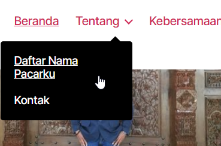

NIM : 1922500195
Nama : Meilianda Aryanti Abelia
Kelompok : SI5A
Hasil kesimpulan pertemuan 4 yang saya ambil adalah:
- Page/laman/halaman itu mirip dengan post, tetapi berbeda peruntukannya
- Page diperuntukkan untuk konten yang bersifat "tetap" atau jarang sekali di update, contohnya: visi misi, struksut organisasi, tentang perusahaan, kontak, lokasi => kesemuanya mungkin diupdate, akan tetapi sangat jarang di update
- Bedanya page sama pos adalah kalo page tidak ada kategorinya
- Cara membuat page adalah pilih laman tambah baru kemudian buat kontennya dan terbitkan
- Berbeda dengan pos, pos sangat sering akan berubah dan tidak menjadi viral lagi jika sudah ada pos lainnya (menimpa)
- Pos digunakan untuk yang sifatnya terbarukan/ dapat digantikan dengan pos baru lainnya
- Cara membuat pos adalah pilih pos tambah baru kemudian buat kontennya terus ke pengaturan yang pos buat kategori dan terbitkan
- Cara membuat custom menu:
- Pilih akses Tampilan -> Menu
- Pastikan memilih menu utama horizontal, kemudian klik Pilih
- Jika mau tambah menu tinggal pilih saja dan klik tambahkan ke menu dan atur menu nya sesuai yang diinginkan
Tampilan hasil custom menu

Tampilan menu di front end

- Jika mau menambahkan menu berupa link tinggal pilih taut tersuai kemudian isi URL dan Teks Tautan, dan simpan Menu
- Cara membuat widget:
- Pilih akses tampilan -> Widget
-